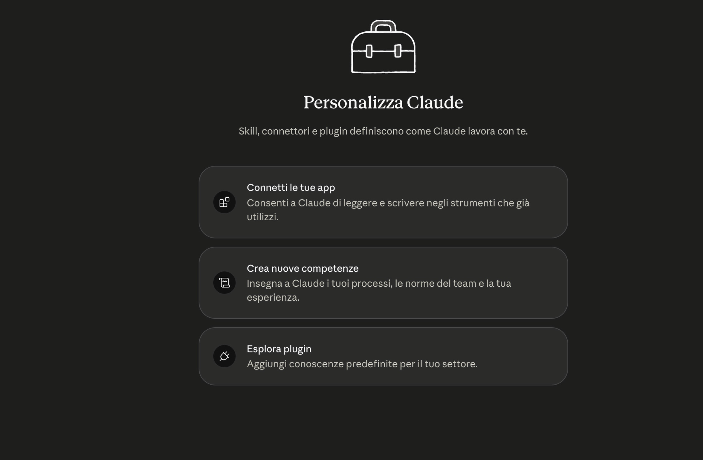
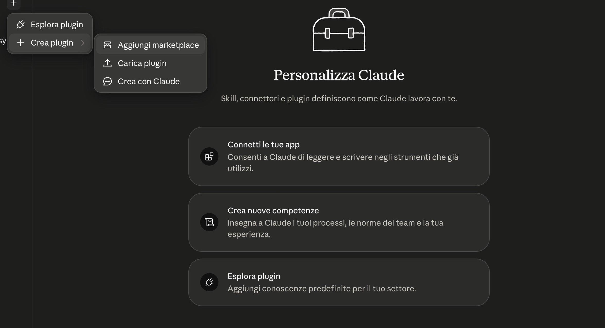
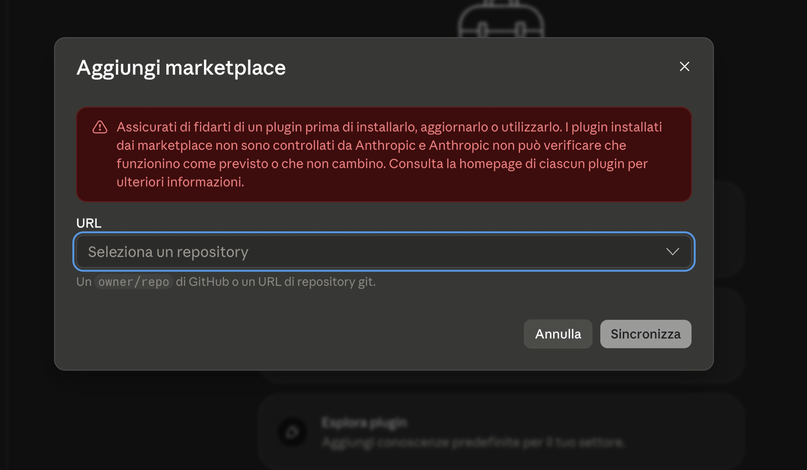
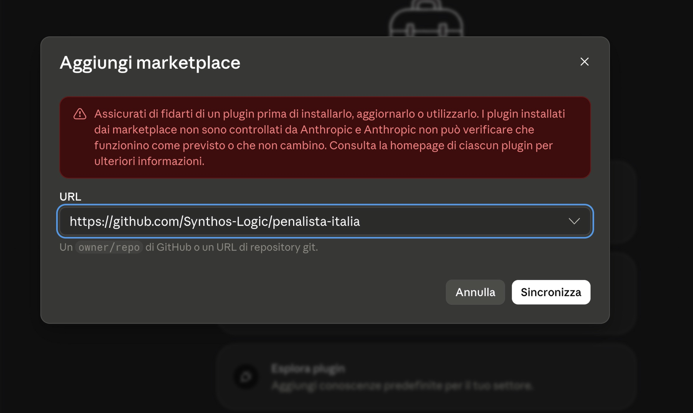
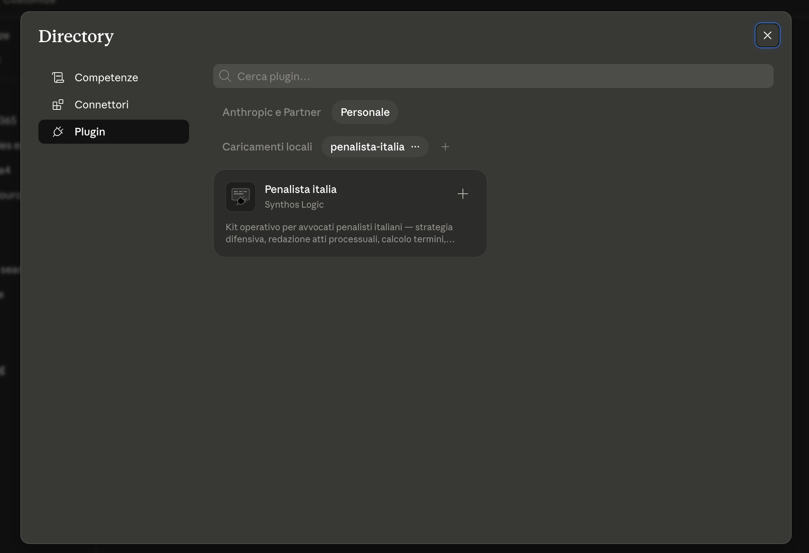
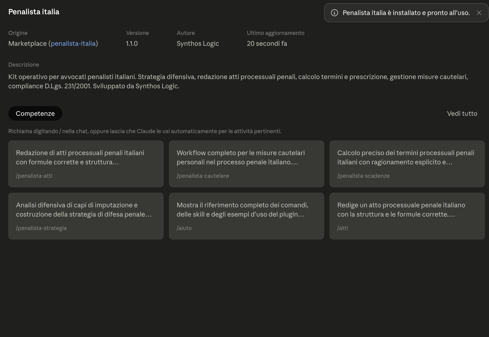
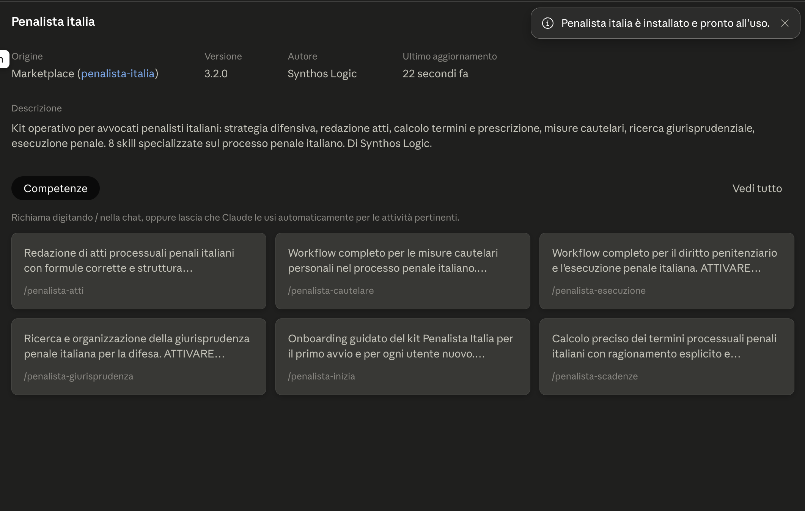
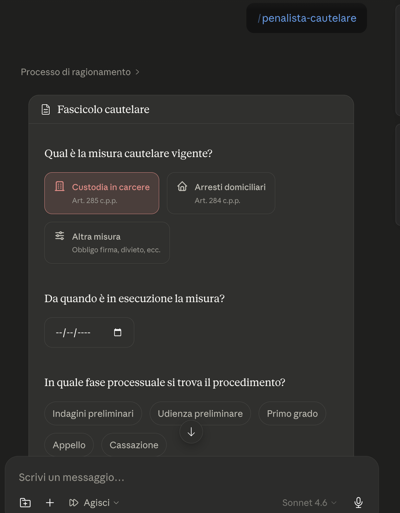

Installa il kit in 5 minuti
Non serve alcuna competenza tecnica. Sono due passi: prima si installa il plugin (le competenze del kit), poi si collega la cartella di lavoro (dove il kit conserva i tuoi fascicoli). Segui le immagini: ogni schermata qui sotto è esattamente quella che vedrai.
Il plugin
Il motore: le 8 competenze del penalista, installate da Claude Desktop in pochi clic.
La cartella di lavoro
L'archivio: la cartella dove vivono i tuoi fascicoli, le scadenze e i dati dello studio.
Apri «Personalizza»
In Claude Desktop, clicca l'icona Personalizza in basso a sinistra. Si apre la schermata "Personalizza Claude".

Aggiungi il marketplace
Clicca il + in alto → Crea plugin → Aggiungi marketplace.


Nel campo URL incolla esattamente questo indirizzo e clicca Sincronizza:
Synthos-Logic/penalista-italia

Installa il plugin
Nella Directory (Plugin → Personale) compare la scheda Penalista Italia di Synthos Logic. Clicca il + sulla scheda.

Comparirà la conferma «Penalista Italia è installato e pronto all'uso».

Controlla la scheda del plugin
Cliccando sul plugin vedi versione, autore e le competenze installate.

La versione mostrata deve corrispondere all'ultima release.
Attiva gli aggiornamenti automatici (consigliato)
Sempre in Plugin → Personale, accanto al nome penalista-italia ci sono tre puntini (···). Cliccali e attiva «Sincronizza automaticamente». Da quel momento le nuove versioni delle skill arrivano da sole.
Se compare una richiesta di autorizzazione GitHub («Concedi»), è la verifica di accesso al repository: serve un account GitHub gratuito. Se non vuoi crearlo, nessun problema — dallo stesso menu puoi usare «Verifica aggiornamenti» quando vuoi, oppure vedi l'installazione alternativa.
Verifica
Apri una nuova conversazione e scrivi /penalista-italia:versione. Deve rispondere con la versione del kit e l'elenco delle 8 skill.
Scarica lo ZIP
Su github.com/Synthos-Logic/penalista-italia clicca Code → Download ZIP.
Decomprimi e rinomina
Decomprimi lo ZIP e rinomina la cartella in Penale-Italia. Mettila dove preferisci (es. Documenti).
Collegala a Cowork
Claude Desktop → Cowork → Seleziona cartella → scegli Penale-Italia.
Ecco come si presenta il kit al lavoro — qui la skill delle misure cautelari raccoglie i dati del fascicolo:

Nella conversazione Cowork con la cartella selezionata, scrivi semplicemente:
Iniziamo
Il kit si presenta, raccoglie i dati del tuo studio (nome, foro, tribunale — li chiede una volta sola) e apre con te il primo fascicolo su un caso vero. Quindici minuti.
Che cosa hai appena installato? Il Passo 1 monta il motore: le competenze del kit (le 8 skill). Il Passo 2 monta l'archivio: la cartella dove il kit conserva i tuoi fascicoli, le scadenze e i dati del tuo studio. Servono entrambi — il motore senza archivio risponde alle domande, ma non conserva il lavoro sui tuoi casi.
Quando esce una nuova versione (la trovi tra le release), il plugin si aggiorna così:
Impostazioni → Plugin → clicca Sfoglia. Si apre la Directory: vai su Plugin → Personale.
Accanto al nome del marketplace penalista-italia clicca i tre puntini (···) → «Verifica aggiornamenti». Il «Commit sincronizzato» mostrato nel menu deve cambiare: è il segno che il catalogo si è allineato a GitHub.
Riavvia l'app, apri una conversazione nuova e scrivi /penalista-italia:versione: il comando confronta da solo la versione installata con l'ultima pubblicata su GitHub e ti dice se sei aggiornato.
Se il kit resta fermo (dice «aggiornato» ma non lo è). Problema noto dell'app Claude: la sincronizzazione del marketplace può bloccarsi in silenzio. Procedura di sblocco garantita — non tocca fascicoli né Knowledge Base: sul chip penalista-italia clicca ··· → Rimuovi; poi + → Aggiungi marketplace → incolla Synthos-Logic/penalista-italia → Sincronizza; reinstalla il plugin (+ sulla scheda); riavvia l'app e verifica in una conversazione nuova con /penalista-italia:versione.
Controlla di aver scritto esattamente Synthos-Logic/penalista-italia (con il trattino).
Sul computer ci sono residui di versioni precedenti. Pulizia: Personalizza → Skills → elimina le eventuali skill penalista-* caricate singolarmente (il plugin le sostituisce tutte). Poi apri una conversazione nuova.
Gli aggiornamenti valgono per le conversazioni nuove: chiudi quella aperta e aprine un'altra.
È normale: prima va sincronizzato il catalogo. Usa i tre puntini (···) accanto al nome del marketplace → «Verifica aggiornamenti».
È il blocco silenzioso della sincronizzazione (problema noto dell'app). Segui la procedura di sblocco nella sezione Aggiornare il kit: rimuovi e ri-aggiungi il marketplace. Fascicoli e Knowledge Base non vengono toccati.
Assistenza. Apri una segnalazione su GitHub oppure scrivi a Synthos Logic.